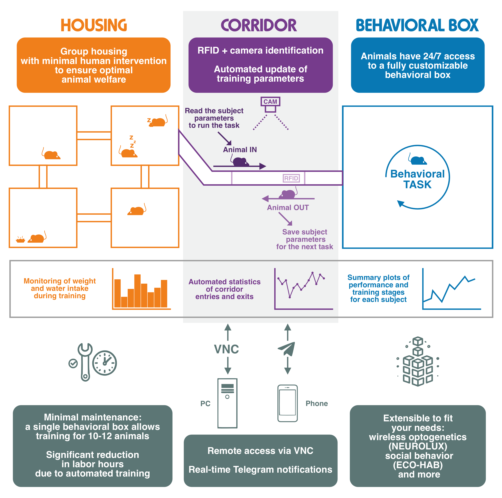
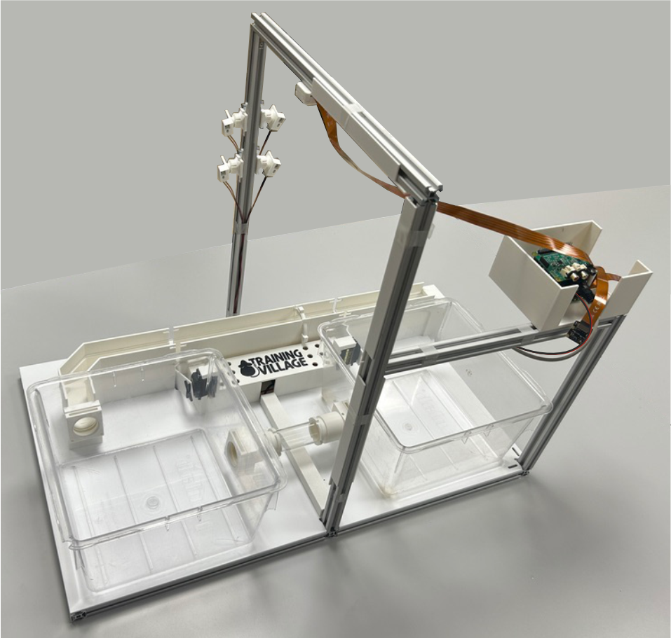
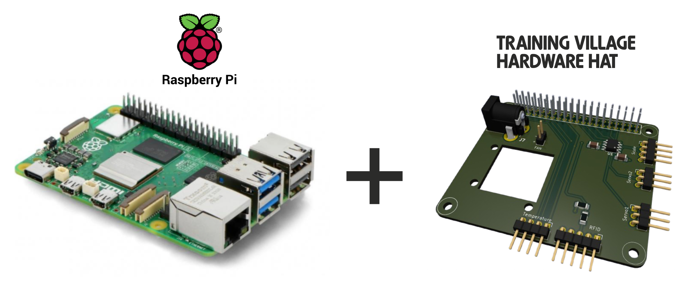
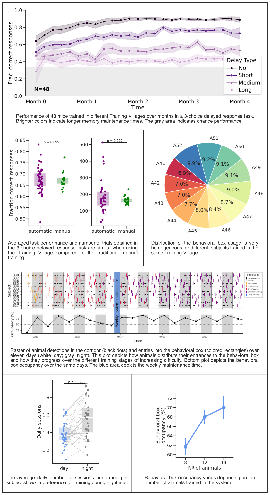

Welcome to The Training Village

The Training Village is a system designed for the continuous automated training of rodents in complex cognitive tasks. In the system, RFID-tagged animals live in groups and access individually the behavioral box (e.g. an operant chamber) to perform tasks at any time, rain or shine.
The Training Village is designed to wrap around your own task protocols and integrate with your behavioral control system although we provide it in tandem with a general-purpose touchscreen chamber and some standard task protocols run by BPod (by Sanworks).
Because the system is running 24/7, it is designed to be remotely controlled. It can be accessed at any time to check on the system’s status or to monitor the state of the animals through various cameras viewing the entry corridor and the inside of the behavioral box. Additionally, a configurable alert system integrated with Telegram allows users to receive real-time notifications regarding system status or the conditions of the animals.
By completely removing direct human intervention in the behavioral testing, the Training Village can decrease the stress of the animals caused by transportation and handling, providing the stable and predictable conditions that are optimal for animal cognitive testing. Moreover, the automatisation of the full process can impact positively in the work of the researchers carrying out these experiments which can be very repetitive and boring.
The Training Village is freely available, and legally protected by GPL version 3 and OSHW version 1 licenses.
How Does It Work?

The system is composed of several key components: the housing where the animals live, the behavioral box where tasks are performed, and the corridor that regulates access to the behavioral box.
The Housing
The animals live together in one or more cages, which promotes better welfare. Any type of cage can be used, as long as it is connected to the corridor via a tube. We offer a solution with 2 or 4 cages connected by transparent acrylic tubes, which can serve different purposes (e.g., one cage with food, another for nesting). Optionally, RFID sensors can be installed in the tubes connecting the cages (Eco-HAB) to gather more data on the animals’ social behavior.
The Behavioral Box
Any type of behavioral box can be used. We provide two design options: one with auditory stimuli and three behavioral ports, and another with a touchscreen and one reward port. The system is designed to interact with behavioral boxes controlled by Bpod (using Python). Integration with other controllers, such as Bcontrol or Bonsai, is currently under development.
The Corridor
This is the central part of the system, consisting of a plastic corridor equipped with an RFID sensor, a weight scale, and a camera. Using a mechanism with two doors, animals can enter the behavioral box under certain conditions. The corridor sizes, shape and the motorized doors have been exhaustively tested and improved to efficiently control single-animal entrances using the minimum space possible. The entire system is controlled by a Raspberry Pi, which handles sending and receiving signals from electronic devices, controls the cameras, and runs the software that controls the whole system. Most of the elements in the mouse version of the corridor are 3D-printed, except for the doors and the corridor lid, which are made of white laser-cut acrylic. The design files are shared in the How to build the training village (link) section. We also share the rat version, which includes more laser-cut parts and fewer printed components due to its larger size and the increased strength required.

The Controller
The software that controls the system runs reliably 24/7 while monitoring the animals, regulating their access to the behavioral box, initiating tasks, and updating data.
We determined that the best option for running this system is the Raspberry Pi, due to its reliability, low power consumption, and cost-effectiveness. These mini-computers are designed to excel in tasks like these, come equipped with specialized video cameras, and can interact with a wide range of electronic devices.
To simplify interaction with the hardware components, we have designed a custom Raspberry Pi HAT (Hardware Attached on Top). This HAT provides the necessary connectors to control two servo motors, an RFID reader, a weight sensor, and a temperature sensor. This setup ensures seamless device connectivity, delivering a plug-and-play experience.

System usage
The Training Village has been rigorously tested in the Brain Circuits and Behavior Lab across multiple cohorts of mice and three distinct behavioral paradigms: a three-choice visuospatial delayed response task, a two-choice visual or auditory perceptual discrimination task, and a two-armed bandit task. The system has been successfully adapted to rats in the Animal Minds Lab.

Citing Training Village
If you use Training Village, please cite:
Serrano-Porcar, B., Marin, R., Rodríguez, J., Barezzi, C., Vasoya, H., Kean, D., Pottinger, D., Taylor, A., Martínez Vergara, H., & de la Rocha, J. (2026). The Training Village: an open platform for continuous testing of rodents in cognitive tasks. bioRxiv. https://doi.org/10.64898/2026.01.12.698970
Open Source
Training Village is an open-source project. You can find the code in our GitHub repository and all the necessary resources to build it in the resources section.
Developed by:
BRAIN CIRCUITS AND BEHAVIOR LAB
Funding was provided by the Spanish State Research Agency (AEI), the European Research Council (ERC), and the Cellex Foundation.


Contact: marinraf@gmail.com